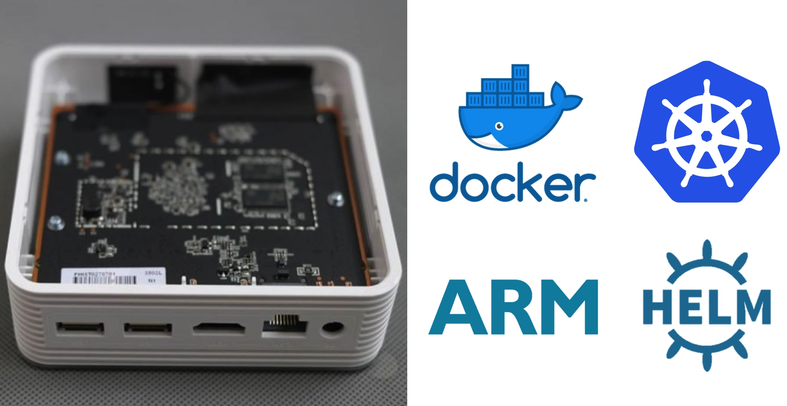
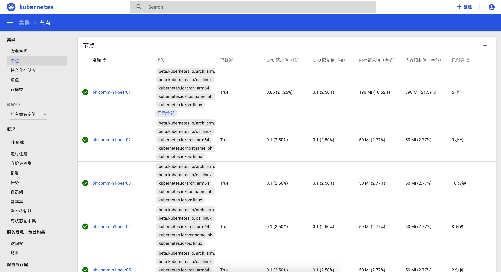
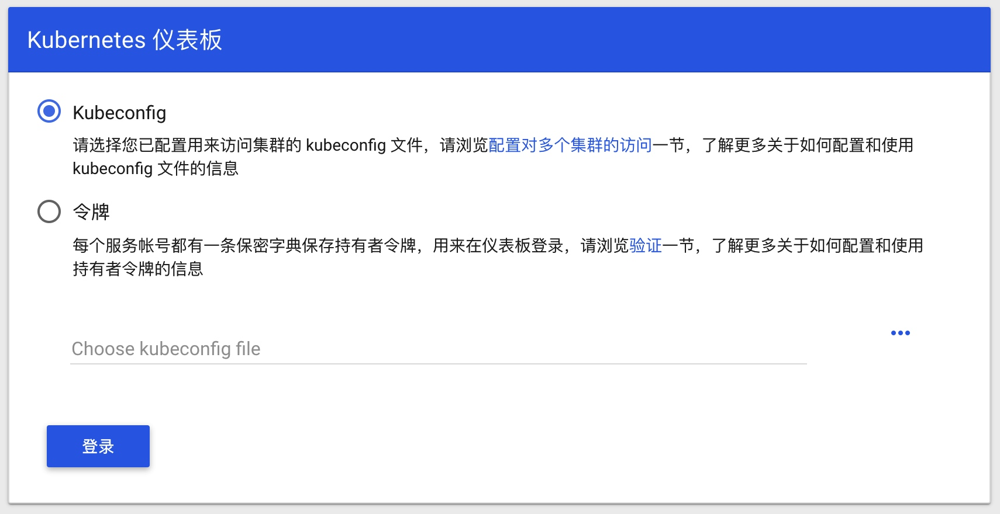
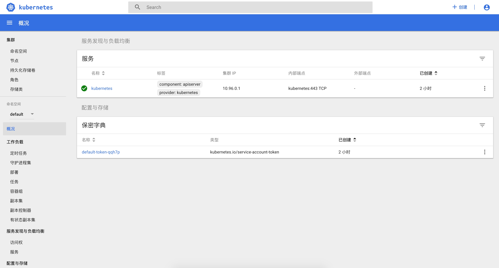

构建 arm64 架构 k8s 集群（phicomm-n1）

树莓派发布了新的主机以后，想买一个来吃灰。搜索了一下，发现斐讯矿难的 phicomm n1 非常便宜（低于人民币 100 元），配置也比树莓派好。同时已经有玩家把 armbian 移植的方法研究出来了，可以跑完整的 arm64 架构的 Ubuntu 系统。性能强、耗电低、无风扇、可以集中供电、这些都非常适合用来建 k8s 集群。于是我就用 695 元搞定了一个 5 节点的 arm64 k8s 集群。
- 可以为 8 台设备提供 12v 电源的集中式变压器 - 48 元
- H3C 8 口全千兆交换机 - 130 元
- x10 网线 - 22 元
- x5 Phicomm N1 - 495 元
- Amlogic S905D 四核 1.5G 的 Cortex-A53 处理器（带 Mali-450 GPU）
- 板载 2GB 的 DDR3 内存
- 板载 8GB 的 eMMC 闪存
- 支持 4K 60Hz 刷新的 HDMI 2.0a 接口
- 1x 千兆以太网（RTL8211F）
- 1x 双频 802.11ac WiFi
- 1x 蓝牙 4.1（和树莓派 3B+ 一样，使用 CYW43455 模块）
- 2x USB 2.0
要点
- 部署 master 节点
- docker-ce、kubeadm、kubelet、kubectl 版本
- 20190805 的 armbian 上使用这样的版本是确定可用的：
apt-get install -yq kubeadm=1.14.4-00 kubelet=1.14.4-00 kubectl=1.14.4-00 docker-ce=18.06.2~ce~3-0~ubuntu - 如果想尝鲜，都使用最新版本也可尝试
- 查询可用版本可以使用
apt-cache madison docker-ce
- 20190805 的 armbian 上使用这样的版本是确定可用的：
- ubuntu 系统需要使用 systemd
- kubelet 需要编辑
/etc/default/kubelet，增加KUBELET_EXTRA_ARGS=--cgroup-driver=systemd --fail-swap-on=false
- kubelet 需要编辑
- phicomm N1 的 armbian 系统使用了 zram，需要增加参数是的 swapon 的时候 k8s 相关服务和 docker 都能正常启动
- kebelet 需要编辑
/etc/default/kubelet， 增加KUBELET_EXTRA_ARGS=--fail-swap-on=false
- kebelet 需要编辑
- 需要使用 arm64 架构的 docker 镜像，必须翻墙或使用镜像拉取
- 使用
mirrorgooglecontainers或者提前拉取正确的镜像 - 使用
kubeadm config images list可以看需要的 docker 镜像
- 使用
- 安装 flannel 的 CNI 插件
- 安装 dashboard
- 安装 helm
- 需要使用 arm64 的镜像 jessestuart/tiller:latest-arm64
- docker-ce、kubeadm、kubelet、kubectl 版本
- 部署节点
- 需要修改
/etc/default/kubelet和/etc/docker/daemon.json - 需要把需要翻墙才能下载的镜像手动部署上去
- 需要 token
- 需要修改
详细安装步骤
准备环境
安装好 armbian 系统，并编辑 /etc/hosts 增加节点的主机名（非必须）。最好是在本机的 IP 地址前都加上 localhost
192.168.31.81 localhost phicomm-n1-peer01
192.168.31.82 phicomm-n1-peer02
192.168.31.83 phicomm-n1-peer03
192.168.31.84 phicomm-n1-peer04
192.168.31.85 phicomm-n1-peer05
安装和配置 docker-ce kubeadm kubectl kubelet
创建 /etc/docker/daemon.json 使 docker 的 cgroupdriver 为 systemd （如果 docker 已经启动，需要重新启动 docker）
mkdir -p /etc/docker
cat > /etc/docker/daemon.json <<EOF
{
"exec-opts": ["native.cgroupdriver=systemd"],
"log-driver": "json-file",
"log-opts": {
"max-size": "100m"
},
"storage-driver": "overlay2"
}
EOF
sudo systemctl daemon-reload
sudo systemctl restart docker
创建 /etc/default/kubelet 让 kubelet 也使用 systemd 作为 cgroup-driver，并启用 --fail-swap-on 强制在 swap 激活时 kubelet 能正常启动。正常 k8s 是不建议使用 swap 的，启动时检查到 swap 处于激活状态时会终止启动。但因为 armbian 使用 zram ，不建议关闭 zram ，因此需要增加额外的启动参数。（如果 kubelet 已经启动，需要重新启动 kubelet）
cat > /etc/default/kubelet <<EOF
KUBELET_EXTRA_ARGS=--cgroup-driver=systemd --fail-swap-on=false
EOF
sudo systemctl daemon-reload
sudo systemctl restart kubelet
安装 docker-ce kubeadm kubectl kubelet
apt update -y; apt upgrade -y; apt autoremove -y; apt clean -y
apt install -yq docker-ce kubeadm kubelet kubectl
# 也可以先查看有哪些可用版本，再安装指定版本
# apt-cache madison docker-ce kubeadm kubelet kubectl
# apt install -yq kubeadm=1.14.4-00 kubelet=1.14.4-00 kubectl=1.14.4-00 docker-ce=18.06.2~ce~3-0~ubuntu
获取 docker 镜像
因为 k8s 缺省使用的 *.gcr.io 官方镜像都被墙，因此需要翻墙。另外，Phicomm N1 是 arm64 架构，因此在获取 docker 镜像时必须使用 arm64 架构的。到 2019 年 8 月 6 日为止， aliyun 提供的 registry.aliyuncs.com 的 google_container 镜像缺省只提供了 x64/x86 架构的镜像，只有 mirrorgooglecontainers 提供的镜像才包含了各种架构最新版本。建议用下面的方法手动获取 k8s 所需 arm64 相关镜像。首先，查看当前 k8s 使用的最新 docker 镜像列表
kubeadm config images list
然后，从 mirrorgooglecontainers 和 coredns 下载 docker 镜像，并重新打上 k8s.gcr.io 的相关 tag，并删除老的 tag
# 下载镜像
docker pull mirrorgooglecontainers/kube-apiserver-arm64:v1.15.2
docker pull mirrorgooglecontainers/kube-controller-manager-arm64:v1.15.2
docker pull mirrorgooglecontainers/kube-scheduler-arm64:v1.15.2
docker pull mirrorgooglecontainers/kube-proxy-arm64:v1.15.2
docker pull mirrorgooglecontainers/pause-arm64:3.1
docker pull mirrorgooglecontainers/etcd-arm64:3.3.10
## coredns 需要从 coredns 官方下载
docker pull coredns/coredns:coredns-arm64
# 打上 k8s.gcr.io 的 tag
docker tag mirrorgooglecontainers/kube-apiserver-arm64:v1.15.2 k8s.gcr.io/kube-apiserver:v1.15.2
docker tag mirrorgooglecontainers/kube-controller-manager-arm64:v1.15.2 k8s.gcr.io/kube-controller-manager:v1.15.2
docker tag mirrorgooglecontainers/kube-scheduler-arm64:v1.15.2 k8s.gcr.io/kube-scheduler:v1.15.2
docker tag mirrorgooglecontainers/kube-proxy-arm64:v1.15.2 k8s.gcr.io/kube-proxy:v1.15.2
docker tag mirrorgooglecontainers/pause-arm64:3.1 k8s.gcr.io/pause:3.1
docker tag mirrorgooglecontainers/etcd-arm64:3.3.10 k8s.gcr.io/etcd:3.3.10
docker tag coredns/coredns:coredns-arm64 k8s.gcr.io/coredns:1.3.1
# 删除 mirrorgooglecontainers 的相关 tag
docker rmi mirrorgooglecontainers/kube-apiserver-arm64:v1.15.2
docker rmi mirrorgooglecontainers/kube-controller-manager-arm64:v1.15.2
docker rmi mirrorgooglecontainers/kube-scheduler-arm64:v1.15.2
docker rmi mirrorgooglecontainers/kube-proxy-arm64:v1.15.2
docker rmi mirrorgooglecontainers/pause-arm64:3.1
docker rmi mirrorgooglecontainers/etcd-arm64:3.3.10
docker rmi coredns/coredns:coredns-arm64
初始化 k8s 集群
使用 kubeadm 初始化 k8s 集群节点。因为使用了 zram ， 因此需要加上 --ignore-preflight-errors Swap 的命令行选项。
kubeadm init --ignore-preflight-errors Swap
正常可以看到安装成功的提示信息
Your Kubernetes control-plane has initialized successfully!
To start using your cluster, you need to run the following as a regular user:
mkdir -p $HOME/.kube
sudo cp -i /etc/kubernetes/admin.conf $HOME/.kube/config
sudo chown $(id -u):$(id -g) $HOME/.kube/config
You should now deploy a pod network to the cluster.
Run "kubectl apply -f [podnetwork].yaml" with one of the options listed at:
https://kubernetes.io/docs/concepts/cluster-administration/addons/
Then you can join any number of worker nodes by running the following on each as root:
kubeadm join 192.168.31.81:6443 --token b5it71.ju23p2j3n2qcnty2 \
--discovery-token-ca-cert-hash sha256:21539e6ae6e9a8c9cddbb9fc7da5750b780dde203aebb1346298f9c4892bac1f
执行相关命令可以正常看到集群信息
# 查看集群信息
$ kubectl cluster-info
Kubernetes master is running at https://192.168.31.81:6443
KubeDNS is running at https://192.168.31.81:6443/api/v1/namespaces/kube-system/services/kube-dns:dns/proxy
# 查看集群节点信息
$ kubectl get nodes
NAME STATUS ROLES AGE VERSION
phicomm-n1-peer01 NotReady master 3m50s v1.15.2
# 查看现有 Pod
$ kubectl get pods --all-namespaces
安装 flannel
# 下载最新的 arm64 架构 flannel 插件
wget https://github.com/containernetworking/plugins/releases/download/v0.8.1/cni-plugins-linux-arm64-v0.8.1.tgz
# 解压缩 flannel 文件
sudo mkdir -p /opt/cni/bin && cd /opt/cni/bin
sudo tar vfxz cni-plugins-linux-arm64-v0.8.1.tgz -C /opt/cni/bin
# 到 https://quay.io/repository/coreos/flannel 查看最新的 flannel 版本并下载
docker pull quay.io/coreos/flannel:v0.11.0-arm64
为了使 flannel 正常工作，需要修改 /etc/kubernetes/manifests/kube-controller-manager.yaml 文件 —— 在 spec.containers.command 中增加 kube-controller-manager 命令的 --allocate-node-cidrs=true 和 --cluster-cidr=10.244.0.0/16 参数（需要根据按照实际情况配置 CIDR 值）。
spec:
containers:
- command:
- kube-controller-manager
- --authentication-kubeconfig=/etc/kubernetes/controller-manager.conf
- --authorization-kubeconfig=/etc/kubernetes/controller-manager.conf
- --bind-address=127.0.0.1
- --client-ca-file=/etc/kubernetes/pki/ca.crt
- --cluster-signing-cert-file=/etc/kubernetes/pki/ca.crt
- --cluster-signing-key-file=/etc/kubernetes/pki/ca.key
- --controllers=*,bootstrapsigner,tokencleaner
- --kubeconfig=/etc/kubernetes/controller-manager.conf
- --leader-elect=true
- --requestheader-client-ca-file=/etc/kubernetes/pki/front-proxy-ca.crt
- --root-ca-file=/etc/kubernetes/pki/ca.crt
- --service-account-private-key-file=/etc/kubernetes/pki/sa.key
- --use-service-account-credentials=true
- --allocate-node-cidrs=true
- --cluster-cidr=10.244.0.0/16
image: k8s.gcr.io/kube-controller-manager:v1.15.2
修改完成后，重新启动 docker 和 k8s
# 下载并安装 flannel
$ curl -Lo kube-flannel.yml https://raw.githubusercontent.com/coreos/flannel/master/Documentation/kube-flannel.yml
$ kubectl apply -f kube-flannel.yml
# 安装完毕后可以看到 flannel.1 网络接口
$ ifconfig flannel.1
# 可以看到所有 pods 已经启动
$ kubectl get pods --all-namespaces -o wide
NAMESPACE NAME READY STATUS RESTARTS AGE IP NODE NOMINATED NODE READINESS GATES
kube-system coredns-5c98db65d4-dps4b 1/1 Running 1 7h40m 10.244.0.5 phicomm-n1-peer01 <none> <none>
kube-system coredns-5c98db65d4-gls5c 1/1 Running 1 7h40m 10.244.0.4 phicomm-n1-peer01 <none> <none>
kube-system etcd-phicomm-n1-peer01 1/1 Running 4 7h39m 192.168.31.81 phicomm-n1-peer01 <none> <none>
kube-system kube-apiserver-phicomm-n1-peer01 1/1 Running 4 7h39m 192.168.31.81 phicomm-n1-peer01 <none> <none>
kube-system kube-controller-manager-phicomm-n1-peer01 1/1 Running 1 6h29m 192.168.31.81 phicomm-n1-peer01 <none> <none>
kube-system kube-flannel-ds-arm64-8nm2s 1/1 Running 6 6h43m 192.168.31.81 phicomm-n1-peer01 <none> <none>
kube-system kube-proxy-8tbqb 1/1 Running 4 7h40m 192.168.31.81 phicomm-n1-peer01 <none> <none>
kube-system kube-scheduler-phicomm-n1-peer01 1/1 Running 4 7h39m 192.168.31.81 phicomm-n1-peer01 <none> <none>
增加集群节点
在新的子节点按照上述步骤安装 docker-ce kubeadm kubectl kubelet ， 创建 /etc/default/kubelet 和 /etc/docker/daemon.json 文件（需要重新启动），拉取 docker 镜像（别忘了 flannel 的镜像），并加入集群（如果忘记了加入集群所需的 token ，可以在 master 节点上使用 kubeadm token generate 重新生成）。
# 加入节点
kubeadm join 192.168.31.81:6443 --token b5it71.ju23p2j3n2qcnty2 --discovery-token-ca-cert-hash sha256:21539e6ae6e9a8c9cddbb9fc7da5750b780dde203aebb1346298f9c4892bac1f --ignore-preflight-errors Swap
如果一切正常，在 master 节点上执行 kubectl get nodes 可以看到所有节点； kubectl get pods --all-namespaces 可以看到当前所有的 pods ；访问 dashboard 可以看到当前所有的节点。

安装 k8s 的 dashboard
当前（2019 年 8 月 6 日） k8s 的 dashboard 正在开发新的 2.0 版本，但没有正式发布。因此需要从最新的 tag 上获取相关文件。
wget https://raw.githubusercontent.com/kubernetes/dashboard/v1.10.1/src/deploy/recommended/kubernetes-dashboard-arm.yaml
mv kubernetes-dashboard-arm.yaml kubernetes-dashboard-arm64.yaml
修改 kubernetes-dashboard-arm64.yaml 把 spec.template.spec.containers.image 修改为 k8s.gcr.io/kubernetes-dashboard-arm64:v1.10.1 ， 在所有节点上都拉取镜像。
docker pull mirrorgooglecontainers/kubernetes-dashboard-arm64:v1.10.1
docker tag mirrorgooglecontainers/kubernetes-dashboard-arm64:v1.10.1 k8s.gcr.io/kubernetes-dashboard-arm64:v1.10.1
docker rmi mirrorgooglecontainers/kubernetes-dashboard-arm64:v1.10.1
修改 kubernetes-dashboard-arm64.yaml 文件，在 spec.ports 中增加 nodePort: 31111 和 type: NodePort 配置。
kind: Service
apiVersion: v1
metadata:
labels:
k8s-app: kubernetes-dashboard
name: kubernetes-dashboard
namespace: kube-system
spec:
ports:
- port: 443
targetPort: 8443
nodePort: 31111
selector:
k8s-app: kubernetes-dashboard
type: NodePort
安装并启动 dashboard
kubectl apply -f kubernetes-dashboard-arm64.yaml
此时可以访问 master 节点的 31111 端口即可访问 dashboard

创建 dashboard 用户
新建文件 dashboard-account.yaml ，并通过命令行 kubectl create -f dashboard-account.yaml 使之生效。成功生效后，可以通过 kubectl -n kube-system describe secret $(kubectl -n kube-system get secret | grep admin-user | awk '{print $1}') 查看 token 信息。
# Create Service Account
apiVersion: v1
kind: ServiceAccount
metadata:
name: admin-user
namespace: kube-system
---
# Create ClusterRoleBinding
apiVersion: rbac.authorization.k8s.io/v1beta1
kind: ClusterRoleBinding
metadata:
name: admin-user
roleRef:
apiGroup: rbac.authorization.k8s.io
kind: ClusterRole
name: cluster-admin
subjects:
- kind: ServiceAccount
name: admin-user
namespace: kube-system
在 https://192.168.31.81:31111/ 登录界面选择“令牌”，并输入 token ，则可以访问 dashboard 管理集群。

安装 helm
下载 arm64 版本的 helm https://get.helm.sh/helm-v2.14.3-linux-arm64.tar.gz 并解压安装。
wget https://get.helm.sh/helm-v2.14.3-linux-arm64.tar.gz
tar vfxz helm-v2.14.3-linux-arm64.tar.gz
mv linux-arm64/helm /usr/local/bin/helm
mv linux-arm64/tiller /usr/local/bin/tiller
使用 helm init 初始化（需要翻墙）。因为官方提供的不是 arm64 平台的，需要在 hub.docker.com 上查找替代。通过 docker search tiller 发现 jessestuart/tiller 是镜像自动更新的多平台镜像。使用 kubectl edit deployment tiller-deploy -n kube-system 修改 spec.template.spec.image 为 jessestuart/tiller:latest-arm64 。
创建文件 helm-rbac.yaml 后通过 kubectl create -f helm-rbac.yaml 使其生效。最后使用 kubectl patch deploy --namespace kube-system tiller-deploy -p '{"spec":{"template":{"spec":{"serviceAccount":"tiller"}}}}' 给最开始通过 helm init 初始化的 tiller 实例打上补丁。
apiVersion: v1
kind: ServiceAccount
metadata:
name: tiller
namespace: kube-system
---
apiVersion: rbac.authorization.k8s.io/v1beta1
kind: ClusterRoleBinding
metadata:
name: tiller
roleRef:
apiGroup: rbac.authorization.k8s.io
kind: ClusterRole
name: cluster-admin
subjects:
- kind: ServiceAccount
name: tiller
namespace: kube-system
配置 helm 使用不用翻墙的镜像
helm repo remove stable
helm repo add stable http://mirror.azure.cn/kubernetes/charts/
helm repo add incubator http://mirror.azure.cn/kubernetes/charts-incubator/
helm repo add bitnami https://charts.bitnami.com/bitnami
k8s 基本操作
# 显示所有 pods
kubectl get pods --all-namespaces
# 显示所有节点
kubectl get nodes
# 显示某个 pod 的信息
kubectl describe pod -n kube-system tiller-deploy-75f6c87b87-gbpfv
参考资料
- arm64 部署 k8s
- 使用 amd64 架构 master 节点管理 arm 架构 kubernetes 集群
- arm64 硬件架构支持总结
- 使用 kubeadm 部署 kubernetes v1.13.2 - 阿里源适合国内网络环境
- 使用 kubeadm 安装 kubernetes 1.15.1
- 使用 Helm 管理 kubernetes 应用
- Helm 的基本使用
- Kubernetes on Raspbian/Hypriot based on teamserverless/k8s-on-raspbian
alexellis/k8s-pi.md - ansible-rpi-k8s-cluster
- Stand up a Raspberry Pi based Kubernetes cluster with Ansible
- Kubernetes on OrangePI ARM64
- Building an ARM Kubernetes Cluster
- Building a hybrid x86–64 and ARM Kubernetes Cluster
- ARMing Kubernetes with OpenEBS #1
sbilly
主要关注 信息安全、网络安全、系统架构、计算机、网络、开发、科技、制造等科技领域